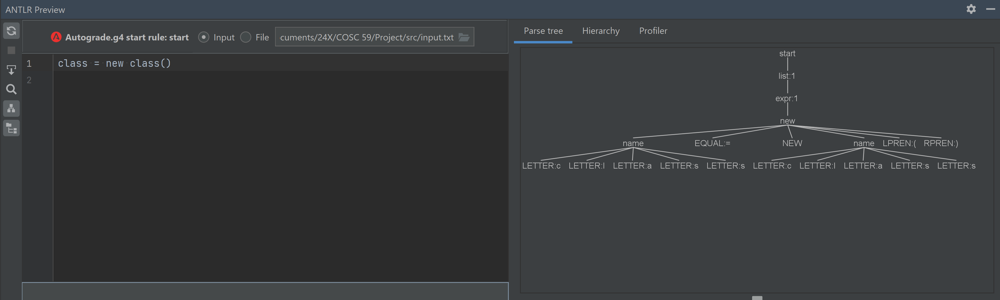
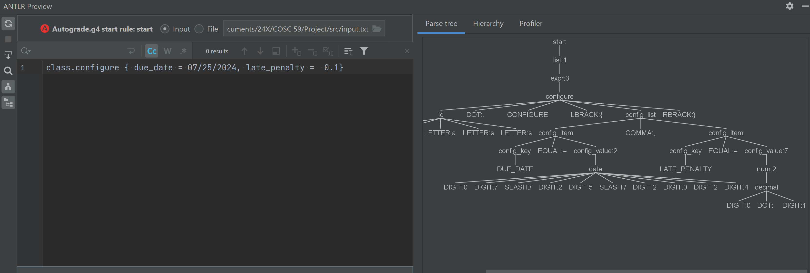
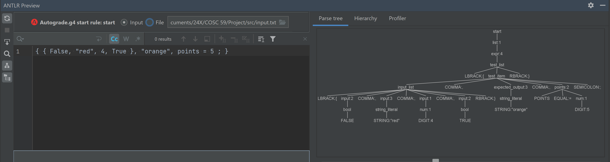
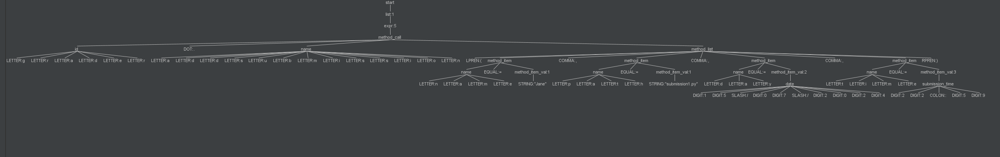

|
------------------|-------------
Author | Warren Shepard and Daisy Li
Date | 24 July 2024
Solution 1
=================
Parse tree for making a new class.

Solution 2
================
Parse tree for making a config list including due date and late penalty.

Solution 3
================
Parse tree for making an input list including expected output and points.

Solution 4
================
Parse tree for making a method call: grader.addsubmission(name = "Jane", path = "submission1.py", day = 15/07/2024, time = 22:59)

Comments
================
Assuming the user is good, the parse trees are accurate. Due to the complexity of the grammar,
we could be more defensive in handling expressions. However, this defensiveness will more likely
be implemented in the parser than the grammar, as we are separating syntax from semantics.
For example, if the user inputs "time = hello", the parser should be able to handle this.